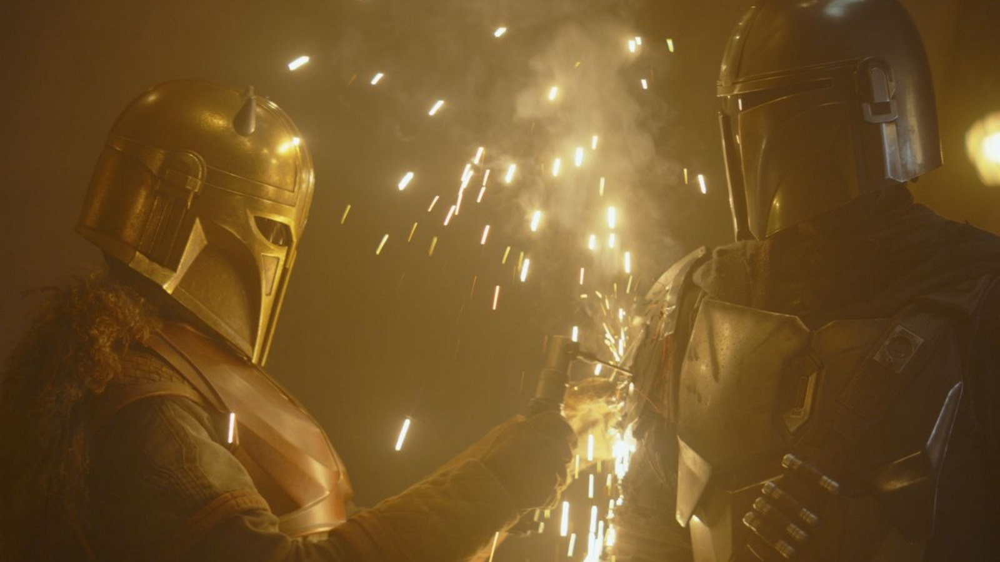
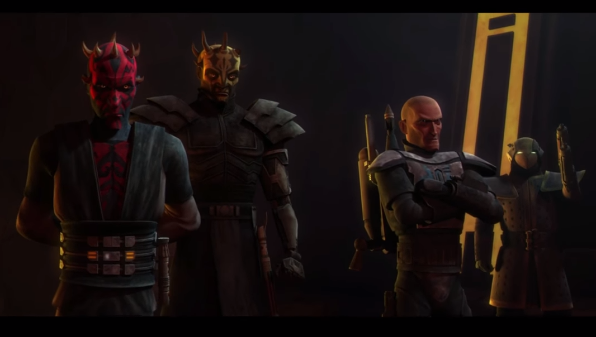
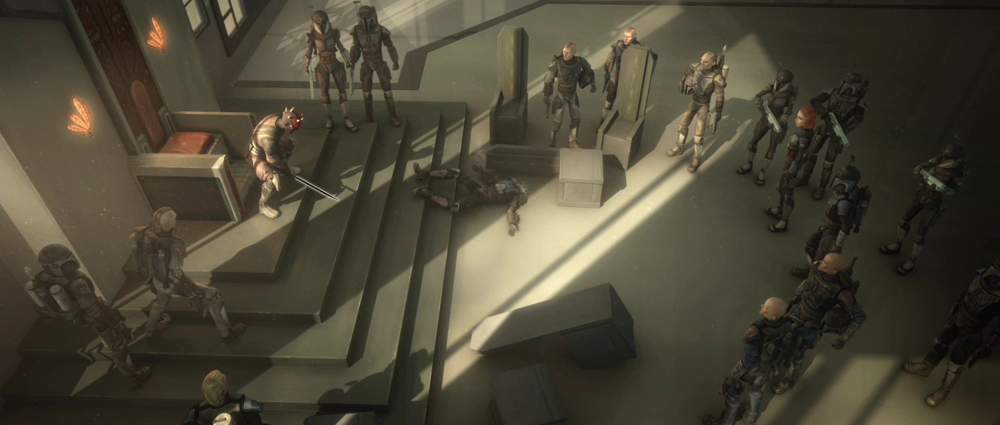
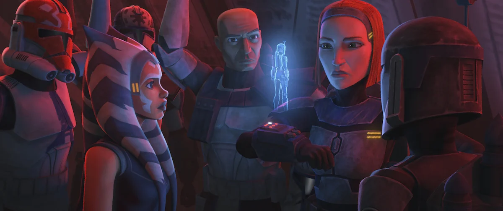

You can click on the images to take a closer look.
The Clone Wars
The Clone Wars was a galaxy-wide conflict that took place between the Galactic Republic and the Confederacy of Independent Systems. Spanning over three years, the war sparked numerous battles across various star systems, involving Jedi generals leading clone troopers against droid armies. Both sides were manipulated by the Sith Lord Darth Sidious, who orchestrated the war to weaken the Republic and eliminate the Jedi Order. The Clone Wars had a profound impact on the galaxy, leading to significant political changes and setting the stage for the rise of the Galactic Empire.
The 501st Legion
The 501st Legion, also known as "Vader's Fist," was an elite unit of clone troopers that served under the command of Jedi General Anakin Skywalker during the Clone Wars. The legion was known for its distinctive blue markings and played a crucial role in many key battles throughout the war. They were involved in major engagements such as the Battle of Umbara, the Battle of Coruscant, and the Siege of Mandalore. The 501st Legion was renowned for its bravery, tactical prowess, and unwavering loyalty to their commanders. Some of its most notable members included Captain Rex, Jesse, Echo, and Fives.
After the Clone Wars, the 501st Legion continued to serve under Darth Vader during the early years of the Galactic Empire. They were instrumental in enforcing Imperial rule and were often deployed on special missions directly under Vader's command. The legion's legacy lived on as one of the most iconic and respected units in galactic history.
Death Watch
Death Watch was a Mandalorian splinter group that sought to restore the warrior culture of Mandalore through militant means. They opposed the pacifist government led by Duchess Satine Kryze and believed in returning to the traditional ways of the Mandalorian people, which emphasized combat and honor. Following the end of the Mandalorian Civil War, the remaining Mandalorian martial traditionalists, were exiled to the moon of Concordia. From there, Death Watch continued to plot against the New Mandalorian government, seeking opportunities to reclaim power. They eventually allied with the Sith Lords Maul and Savage Opress to launch a coup against Duchess Satine, leading to a brief takeover of Mandalore. However, internal conflicts and betrayals weakened Death Watch, and they were ultimately defeated when Maul took control of Mandalore for himself.
During the Imperial Era, some Mandalorian warrior groups like the Protectors considered the Death Watch to be traitors for their actions during the Clone Wars and viewed House Vizsla and its clans as enemies. However, remnants of Death Watch ideals persisted among certain Mandalorian factions, influencing their views on Mandalorian culture and identity.
Takeover of Mandalore
The takeover of Mandalore happened when splinter faction Death Watch and renegade Sith Lords Maul and his brother Savage Opress launched a sham takeover of the Mandalorian homeworld, overthrowing the pacifist New Mandalorian government of Duchess Satine Kryze. The plot began from an alliance between Death Watch and the Sith brothers Maul and Savage Opress; Death Watch had been attempting to takeover the government of Mandalore for some time, while Maul hoped to create a base of power. Both sought revenge against Jedi Master Obi-Wan Kenobi and thus agreed to work together.
Together, Maul and the Death Watch leader, Pre Vizsla allied and formed the Shadow Collective. Under Maul's vision, they created an army made from various elements of the criminal underworld, including Black Sun, the Hutt Clan, and the Pyke Syndicate, all of whom fell under the banner of the Shadow Collective. After the successful execution of their plan, Vizsla gained the support of the people and dethroned the Duchess and replaced her as leader of Mandalore. His ambitions, however, saw him betray the Sith and imprison them. As his reign began, the politicians of the planet either joined him or were executed. While in prison, Maul allied himself with former Prime Minister Almec, who had been imprisoned on corruption charges. The Sith broke free from prison, and Maul challenged Vizsla to a duel for leadership.
Maul emerged victorious, executing Vizsla and taking the Darksaber as his own, thus becoming the new ruler of Mandalore. Some Death Watch forces refused to bow to Maul, however, leading to open conflict amongst Death Watch. Maul then installed Almec as Prime Minister to serve as a puppet ruler, keeping his presence a secret from the Republic.
Siege of Mandalore
The Siege of Mandalore was one of the final battles of the Clone Wars, taking place concurrently with the Battle of Coruscant. The battle saw Republic forces, led by former Jedi Knight Ahsoka Tano alongside Clone Commander Rex leading a division of 501st legion. They launch an assault on the planet Mandalore to capture former Sith Lord Darth Maul, who had taken control of the planet. On the way down, the attacking force received a transmission from Almec, who indignantly told them that the presence of Republic forces violated a century-old treaty and that she would be seen as an enemy in the eyes of the Mandalorian public for this action. Soon, the battle would bring destruction and fire to much of Mandalore, with a number of the world's plazas being engulfed in flames. 
Ahsoka and Rex led a strike team to capture Maul, who had taken refuge Undercity. Maul captured one of the clone troopers and used him as a hostage to lure Ahsoka into a confrontation. Maul stated that he had foreseen Republic downfall and the rise of something far worse. Later, Maul lures Ahsoka to the Throne Room of Mandalore's palace, where they engage in a fierce lightsaber duel. During the battle, Maul reveals his knowledge of Anakin Skywalker's transformation into Darth Vader, which unsettles Ahsoka. Ultimately, Ahsoka manages to defeat and arrest Maul, bringing an end to his reign on Mandalore. However, their victory is short-lived as Order 66 is executed, leading to Ahsoka and Rex being targeted by their own troops.
Order 66
Order 66, also known as Clone Protocol 66, was a secret order issued by Supreme Chancellor Palpatine during the Clone Wars that commanded the clone troopers of the Grand Army of the Republic to execute their Jedi generals. The order was part of Palpatine's larger plan to eliminate the Jedi Order and consolidate his power as Emperor of the Galactic Empire. The execution of Order 66 led to the near-extermination of the Jedi, with only a few surviving the initial purge. The clones, who had been genetically engineered to be loyal to the Republic, carried out the order without question, turning against their Jedi commanders in a swift and brutal manner. This event marked a turning point in galactic history, leading to the rise of the Empire and the beginning of a dark era for the galaxy.
.jpg)
One of the most notable instances of Order 66 occurred after the Siege of Mandalore, where Ahsoka Tano and Captain Rex were targeted by their own clone troopers. However, Ahsoka managed to remove Rex's inhibitor chip, which prevented him from carrying out the order. This allowed them to escape and survive the initial purge, although many of 501st clones died that day. The aftermath of Order 66 had far-reaching consequences, leading to Jedi's demise and the establishment of the Galactic Empire under Palpatine's rule.